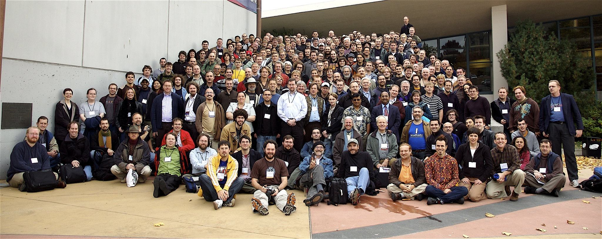

Davey Bob had a rough childhood growing up. He has
noticed how his life has changed and developed as he
started to notice the children around him as he was
growing up. The life of the children were different
compared to his. He has always been wondering and he
found the answer as he was watchly 2 kids closely around
his neighborhood. The answer was the environment and the
people surrounding the child. He now focuses on helping
children grow the life they are meant to live by
providing joy and care to everyone. They are the next
generation, we need to teach and help them strive for
the better to create a better future.
